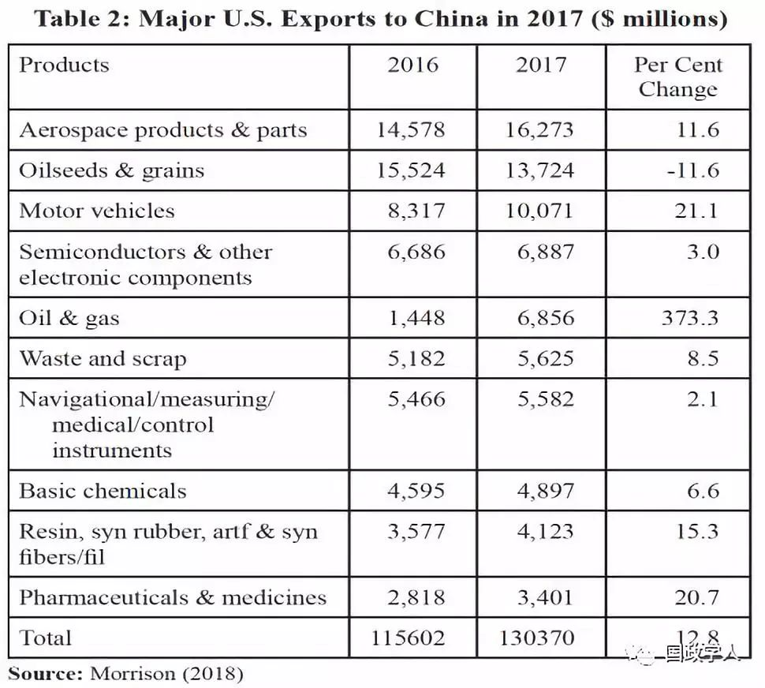
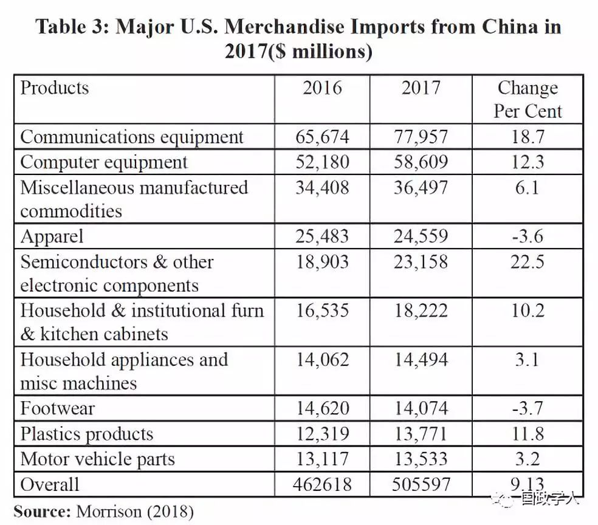
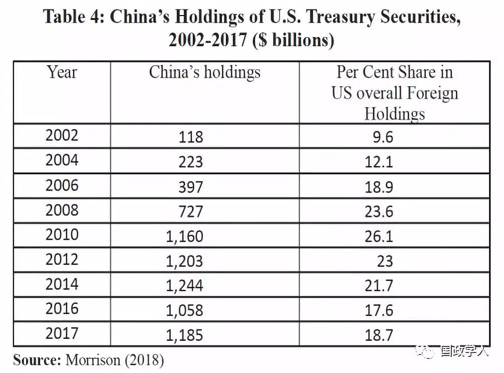

收录于合集

简 介
【 作者 】
Jaswinder Singh Brar，现任旁遮普大学经济学研究中心教授。他的研究兴趣集中在国际贸易、教育经济学和农业经济学。他曾主持过世界银行、印度国家计划委员会、印度大学协会（AIU）、新德里、旁遮普政府、印度国家基金会、新德里政策研究中心等赞助的十四个研究项目。
【 编译 】 杨 洋
【 来源 】
Sino-US Trade War: A New Challenge to Globalisation, Edited by Surender Mor, Professor Department of Economics, Vista International Publishing House DELHI-110053 (INDIA), First Edition: October 2018.
本文来自一本名为Sino-US Trade War: A New Challenge to Globalisation的印度国际论坛（2018年8月6日）论文集。该书试图分析正在进行的中美贸易战中出现的一些具有重大实际意义的问题，同时分析第三次世界大战、货币战争、全球萧条等爆发的可能性。
【 校对 】 **陈舜波 金 **琳
【 审核 】 李 源
核心观点
中美作为两个政治经济大国，具有天然的破坏性因素，对国际贸易与经济环境构成了巨大挑战。本文对中美间的贸易问题进行了细致的分析。 贸易战已经对全球化进程造成了巨大的冲击。持续的贸易争端必然会减少中美两国的互相交流，破坏贸易供应链，降低消费者福利，使两国对外关系产生紊乱。贸易摩擦最终还会对货币与股票市场、工业化以及就业产生重要影响。综上而论，贸易战弊大于利，如何使摩擦得到有效管控而非将其进一步激化，是值得研究的重要课题。
文章导读
一、理论基础
历史上，国家间的贸易摩擦十分常见，从简单的针对特定商品的关税报复到影响更加严重的权利保护主义。一般而言，贸易战很难获胜，并且存在很大的不确定性及巨大的附带损害。此外，全球经济大国之间的贸易战会对国际贸易体系产生极其不利的影响，会严重损害既定的贸易模式与实践。经验表明，大多数情况下，贸易战开始于一国国内的某些特定部门，然后会蔓延至国际贸易的其他领域。由于各种各样的原因，各国无法在较长时期内保持特定部门的比较优势，因为它们本质上是动态的，对技术进步有很高的敏感性。理论和实证贸易结构可以充分证明这一点。
** 二、中美贸易争端的爆发**
正式意义上的中美贸易争端开始于2017年美国启动其贸易法案第301条。301调查着重阐明了中国在三个领域内的“错误行为”：对知识产权的保护不力，强制性的技术转移以及在美国市场倾销某些商品。
在过去约二十年间，全球经济大国之间的贸易摩擦以各种方式成为头条新闻。但是，在两国相互采取一些初步的单边行动之后，WTO会对这些贸易纠纷进行裁决。但这次中美贸易摩擦中的单方面行动过于激烈，给双方关系造成了严重打击。特朗普总统领导下的美国政府一直试图在各类经济事务中，通过采取美国第一（America First）的政策来改变其经济状况。在当前中美之间的贸易问题上，双方在贸易、技术、投资和知识产权等问题上存在很大分歧。美国长期存在巨大的全球贸易逆差，特别是与中国的贸易逆差。有趣的是，美国与中国贸易不平衡的性质因商品和服务而异。目前，中国与美国的服务贸易逆差达到380亿美元。但是，当将商品和服务合并计算时，中国有3000亿美元的巨额盈余。 此外，在中国的商品贸易顺差中，出口制成品占很大的比例。
美国认为，中国的出口原产地规则没有透明度。中国政府以某种方式参与私营企业，对价格进行操纵。 但另一方面，随着全球产业转移，世界商品贸易出现了明显的变化。 在过去的几十年中，美国在世界商品贸易中的份额出现了下降。 例如，从1984年到2010年，美国在全球商品出口中的份额下降了近三分之一。 到1999年，它稳定在大约12％的水平，在2000年到2010年间下降了3.5%（Mandel，2012）。


中美两国的经济联系非常紧密且多元，各经济部门相互依赖程度高。 除贸易外，外国投资在双方的经济和金融交易方面发挥着重要作用。 随着中美两国资本市场的开放和整合，中国在美投资的很大一部分流入了以美元计价的美国证券（表4）。

** ** 三、中美贸易战的解释****
这两个经济强国之间的贸易摩擦目前并没有停止的迹象。这已成为让人们严重关切的问题。相反，双方都坚持强硬的立场，几乎每一个举动都被另一方的强势举动所抵消。关于两个主要大国之间出现这种状况的根本原因，则存在着强烈的意见分歧。有学者认为，整个问题应该考虑到既定的和正在崛起的强权之间的结构冲突，这种崛起的力量威胁着前者的全球霸权。到目前为止，美国被视为合法的全球大国，有能力在各地发挥影响力，其庞大的国际网络建立在复杂的政治、经济和军事系统的基础之上，并试图以各种方式保护其霸权。而另一方面，中国也逐渐获得了跨大陆经济和军事力量的地位，试图进一步改变全球权力分配。这就是为什么人们会认为，当下贸易战的真正根源不仅仅是简单的贸易和关税问题（Saran，2018）。此处的贸易已被用作获取其他东西的重要的战略武器。贸易和战略问题的交汇更是加剧了贸易战。尽管美国将自身日益严重的贸易逆差问题归咎于中国，但这些事件背后的考量并不局限于贸易问题。
而且，美国企业利益与美国战略利益之间的冲突一直困扰着后者的全球战略规划。与此同时，中国政府对某些产业的保护政策也引起了美国的抨击。“中国制造2025”计划作为一项雄心勃勃的计划，是其保护性政策的延续，旨在提升其制造业基础并将中国转变为一个高科技强国。该计划旨在使中国主导制造业、机器人技术、先进信息技术、航空和新能源汽车的未来。发达经济体特别关注这个问题，因为中国可能在未来威胁或取代其产业地位（Jacob和Jimmy，2018）。
** ** 四、中美贸易战的影响****
贸易战的影响难以量化。国家的规模、所涉及部门的性质以及关税的强度决定了其整体的影响。即使进行长期的贸易战，各国也能生存。关税升级所引发的贸易战对贸易量的影响取决于相关方的各自需求和供应弹性。但是一般而言，任何形式的贸易壁垒都会降低商品的数量，从而增加关税。
二十世纪爆发了三次大规模的贸易战，即20世纪60年代德国和法国之间的Chicken War，20世纪80年代欧洲和美国之间的the Pasta War，以及欧洲和拉丁美洲国家从1993年至2012年持续了大约20年的的Banana War。到目前为止，贸易战一直局限于提高关税或征收新的关税。但在目前的地缘政治形势下，它的范围似乎会扩大。各国有可能诉诸于使用非关税壁垒来保护其国内市场或遏制竞争对手国家的新兴产业，贸易部门会因全球福利损失而遭受严重萎缩。在这种情况下，受到国内政治经济因素的推动，各国将采取针锋相对的政策措施。如果进入服务业，情况会更加复杂。
贸易战本质上十分昂贵，难以承受较长的时间。迫于国内压力，各国采用贸易战的方式来保护本国的政治敏感行业。贸易战是一条自我毁灭之路。对于任何国家而言，收益和成本取决于其在受影响地区的市场风险。除了直接影响外，贸易战还会对股票市场、债务市场和货币市场等产生影响。
** ** 五、结论****
贸易战对全球化进程产生了巨大的冲击，被认为是英国脱欧后的又一次重大冲击。其加强了区域主义的力量，并推动了双边贸易协定的签署。美国领导层已经在质疑其许多贸易协定的实用性。随着多边机构的削弱，国际关系必将发生变化。各国经过长期谈判后采取的公平竞争原则可能会受到影响，因为它们在挑三拣四的同时，也允许外国参与者进入其经济市场。这种情况远比与贸易有关的正常纠纷和紧张局势更糟。有强烈迹象表明，两国之间的贸易战会正式爆发。贸易政策的单边主义对其他所有贸易问题都有影响。这种情况或许并不能被视为是全面的贸易战，但它每天都在加剧。大概是受到国内因素与战略考虑的影响，任何一方都没有抓住（和解）的机会。贸易战被视为一项战略性的政策工具。
持续的贸易争端必然会减少中美两国的互相交流，破坏贸易供应链，降低消费者福利。贸易的中断将给两国的对外关系产生很大的影响。双方都可能选择攻击对方的敏感行业。美国一直指责世贸组织没有能力处理棘手的贸易或其他问题。过去，美国在经过一段时间的单方面行动之后会将这些问题提交给世贸组织，但现在已不再这么做。世界贸易组织是唯一一个根据一国一票原则进行投票的国际机构。过去，发展中国家通过诉诸世贸组织机制在一定程度上成功地保护了它们的利益。
贸易摩擦最终会对货币与股票市场、工业化以及就业产生重要影响。任何全球经济的放缓都将会影响各国的出口创汇能力，那些面临外汇短缺的发展中国家受损更重。由于关税调整，出口部门将受到更严重的影响。卷入贸易战的国家企图让第三国和更多的经济部门参与进来，这将使局势进一步复杂化。多边贸易体制的破坏会给发展中国家和新兴经济体带来严重损害，因为它们在双边贸易和商业协定中的谈判能力仍然较低。贸易战几乎没有为非参与国提供太多经济可操作性空间，因为持续存在的不确定性会产生令人困惑的信号，并对经济决策产生强烈影响。
扫描下方小程序码查看原文p df
本文由国政学人微信公众平台编译首发
更多阅读
国政学人 （ID：guozhengxueren)
为方便学人及时阅读高质量文章
别忘把国政学人设置 星标 哦~

国政学人
支持学术公益与知识传播
微信扫一扫赞赏作者 __赞赏
已喜欢，对作者说句悄悄话
取消 __
发送给作者
发送
最多40字，当前共字
上一页 1/3 下一页
长按二维码向我转账
支持学术公益与知识传播
受苹果公司新规定影响，微信 iOS 版的赞赏功能被关闭，可通过二维码转账支持公众号。